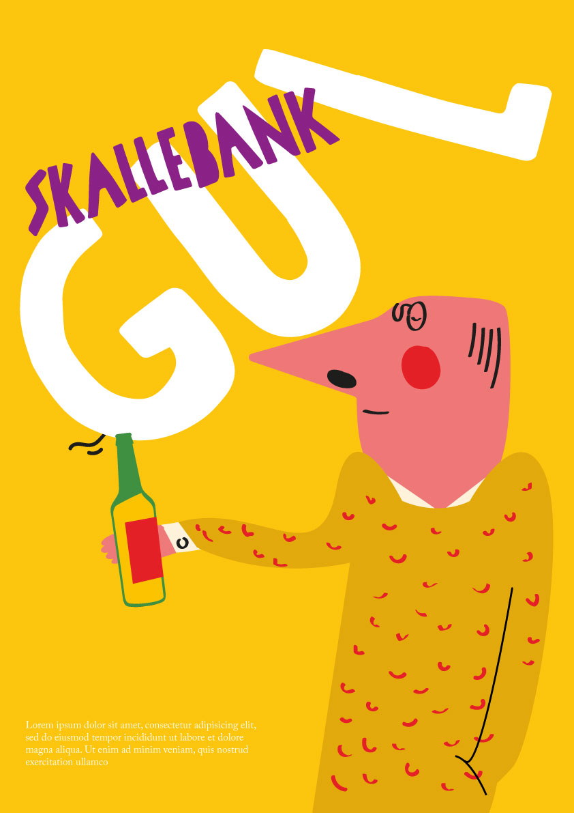
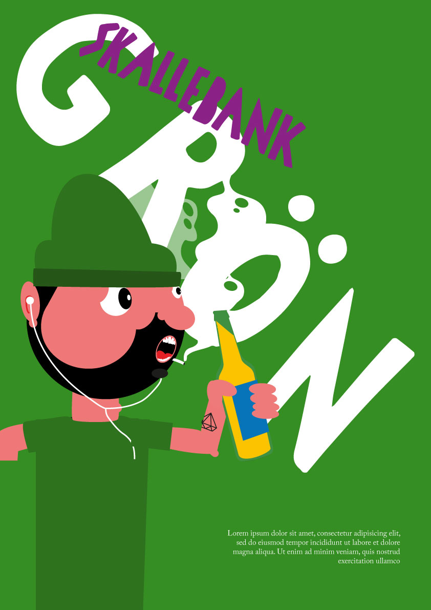
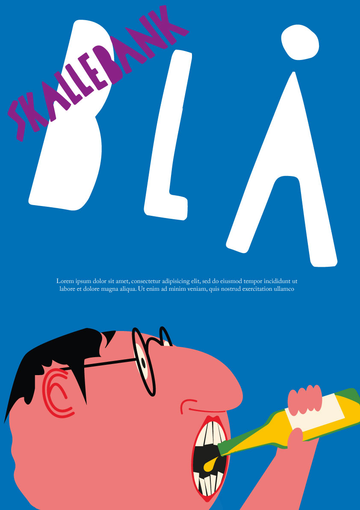

Skallebank är din ölbutik
Skallebank är smala ölsorter för den breda massan.
Skallebank handlar om att lyfta fram de små bryggerierna.
Skallebank ser inte ner på någon. Ingen smak, inget märke, ingen människa.
Skallebank är coolt för att Skallebank inte är rädd för att vara ocool.
Skallebank erbjuder smaker, inte varumärken.
Skallebank låter dig smaka i butiken. Hur ska du annars veta vad du vill ha?
Skallebank hjälper dig hitta smaker du gillar, inte smaker du ska gilla.
Skallebank är kärlek till öl.
Skallebank är öl.

Hur vi talar
Kommunikationen är informell och okonstlad, vardagligt språk och direkt tilltal. Du och vi. Vi undviker facktermer i huvudtext, samtidigt ska de ölkunniga kunderna fortfarande kunna hitta den informationen de letar efter.
Hur vi ser ut
Klara färger, tydliga kanter, glatt och lekfullt med handgjord känsla. Tänk dansk barnbok från sjuttiotalet.
Hur vi jobbar
I mindre butiker erbjuder vi öl från mindre bryggerier. Alla sorter finns representerade, högt och lågt, vardag och fest, allt från brukslager till trippeljästa trappister. Vi dömer inte. Sortimentet skiftar efter läget, om möjligt lyfter vi början fram de lokala bryggerierna på platsen. Skallebank hittar du i förorten, men vår ambition att kunna etablera oss i innerstaden och i mindre orter. Om du inte bor i en storstad så kan du fortfarande använda vår webbshop eller besöka vår ölbil när den kommer till din stad.


Webbshop
Vår webbshop följer butikskonceptet. Enkelt och lättnavigerat, du kan hitta vad du letar efter oavsett förkunskaper. Gör du vårt smaktest så kan vi rekomendera öl baserat på vad du brukar gilla. Precis om i våra fysiska butiker är det snabb ruljans på sortimentet då leveranserna från bryggerierna oftast är små. Har du en en favorit som är slut i lagret kan du förköpa från nästa leverans eller bli notifierad i mail när vi har produkten i sortimentet.
Ölbilen
En foodtruck fast med öl. Den visar sig där den behövs; konserter, festivaler och i soliga parker på sommaren. Du kan följa dess väg på vår hemsida eller på instagram.
Vad vill vi
Vi ska bli den största lilla ölbutiken i Sverige och norden om lagen tillåter. Vi börjar i storstäderna och rör oss ut i resten av landet tills alla fått tillgång till god öl från oss i sitt närområde...
Skallebank - Hitta den du gillar.
{kind=link}
{kind=link}
{kind=link}